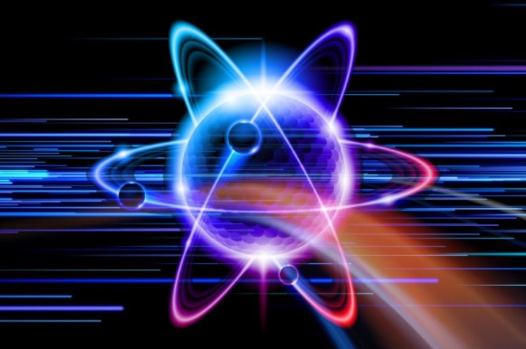

Os fótons são as partículas que compõem a luz e podem ser definidos como pequenos “pacotes” que transportam a energia contida nas radiações eletromagnéticas.
importancia dos fótons
Graças ao efeito fotoelétrico, tornou-se possível o cinema falado, assim como a transmissão de imagens animadas (televisão). O emprego de aparelhos fotoelétricos permitiu construir uma maquinaria capaz de produzir peças sem intervenção